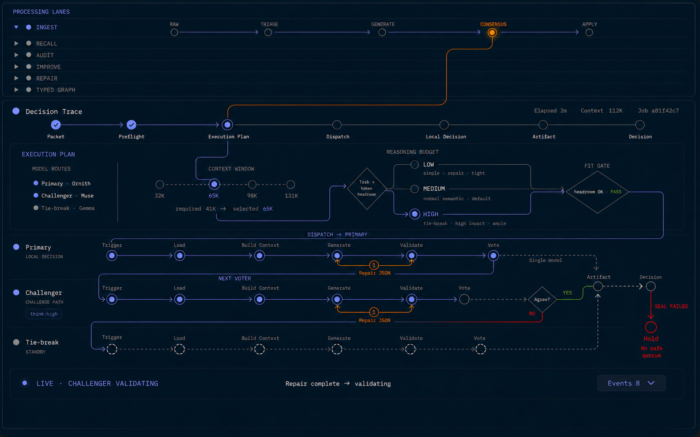

完了の意味: 固定 fixture で「ぱっと見が完成画像とほぼ同一」、live では表示経路が実行証跡と一致し、GitHub-backed runtime の SHA・health・指定 viewport の DOM 実測まで合格していること。

HIGH や 112K を hardcode しない。実際の選択が medium なら MEDIUM、役別 context が異なるなら各 role binding の実値を光らせる。/api/activity-stream、poll fallback、/api/local-consensus、observed-event replay を置き換えたり、存在しない synthetic progress を生成したりしない。high を送らない。能力・入力・capacity が不明なら現行互換の medium に戻す。Artifact / Decision → Hold を通常の no-safe-quorum 経路として描かない。quorum failure は Artifact 前から Hold、Artifact 後は seal failure だけ。.env、_handoff/2026-06-11_0042_recall-redesign.md、logs/、他タスクの実験を変更・stage・commit しない。origin/main=e2c8a500412af1e53e018b180250893df298ad2c。現在の local main=c60f773 は 455 commits 古い。実行開始時は再度 fetch し、その時点の最新 origin/main から clean branch / worktree を作る。/api/activity-stream と 1秒 poll fallback がある。decision_trace.overall / lanes / events / outcome を持ち、renderer は event id を使って observed transition だけを replay する。ModelResidencyPlan.role_contexts は既に存在し、各 vote は context_for(model) を使う。ただし Dashboard は共通 context_tokens だけを表示し、役別 effective context を投影していない。structured_think_mode(model, num_ctx) は現状すべて medium。transport は low / medium / high を受理するが、configured model ごとの実効能力と安全な選択 policy は未導入。Processing Lanes (existing HTML)
active workflow / active stage
│ only dynamic connector
▼
Decision Trace (fixed-coordinate SVG harness)
Execution Plan → Context → Actual Think → Fit Gate
→ Primary → Challenger → Agree?
├─ YES → shared Artifact → shared Decision
├─ NO → Tie-break → shared Artifact → shared Decision
└─ no safe quorum → Hold (before Artifact)
seal failed → Hold (only post-Artifact exception)pending / active / done / skipped / error class と実ラベルで表す。structured_think_mode を最小の純粋 selector として拡張する。task / lane / role、required / effective context、検証済み model capability 以外の推測値は使わない。medium、simple / bounded repair は評価合格時だけ low、Tie-break / high-impact は品質・JSON-valid率・latency・headroom・model capability の全 gate 合格時だけ high 候補とする。未知値は medium。lanes[] へ最小投影し、別 endpoint を作らない。| ID | workflow / state | 必須表示 |
|---|---|---|
| A | INGEST / Primary generate・validate | INGEST の active CONSENSUS から入口へ橙線1本。Primary active、後続は待機。 |
| B | RECALL / Challenger validate | RECALL だけ展開。Primary done、Challenger active、Tie-break standby。 |
| C | AUDIT / pair safe agreement | Agree YES → 共通 Artifact → Decision。Tie-break skipped、不要な赤線なし。 |
| D | IMPROVE / disagreement・Tie-break active | Agree NO → Tie-break Trigger。Artifact / Decision は pending。 |
| E | REPAIR / Tie-break 2-of-3 agreement | Tie-break Vote → 共通 Artifact → Decision。重複 node / 縦点線 bus なし。 |
| F | TYPED GRAPH / no safe quorum | Artifact 前から Hold。Artifact / Decision は未通過、理由は No safe quorum。 |
| G | Artifact seal failed | 合意後の共通 Artifact からだけ Hold。ラベルは SEAL FAILED。 |
| H | idle / no work | 誤った active path、pulse、Hold なし。意味要約へ安全に折畳み。 |
git fetch origin 後の exact origin/main から clean branch / worktree を作り、Dashboard / decision / tests の現責務を再監査する。dirty checkout の未追跡資産は一切移動しない。基準 SHA と対象ファイルを実行ログへ記録する。lanes[].context_tokens と actual think を組み立てる。redaction と過去 record 互換を守り、不明値は捏造せず — とする。data-* を更新する。ResizeObserver は上段から入口への1 path の d だけを更新する。git diff --check、本番 lock から隔離した全体 test を通す。policy / payload / UI の意味ある単位ごとに意図した file だけ commit し、他者変更を含めない。push → Dashboard（必要な場合だけ関連 decision service）restart → runtime archive direct_url.json SHA → health の順を守る。drift=false の時だけ Plan を done にする。script#plan-meta と .badge[data-state] は常に同じ状態にする。running、真の blocker でのみ blocked、すべての Exit Criteria 合格後だけ done。| 責務 | 主な候補 | 方針 |
|---|---|---|
| Reasoning policy | decision/local_structured.py、関連 unit tests | 共有 selector 1か所。transport は再利用。 |
| Role / context input | decision/decision_router.py、既存 audit / marker tests | selector に必要な実値だけ渡す。 |
| Dashboard projection | ops/dashboard.py、tests/test_dashboard.py | 既存 lanes[] に role-effective context を追加。 |
| Parent / SVG / renderer | dashboard_static/index.html、app-renderer.js、style.css | 既存 client / endpoint / replay を維持。 |
| 不要な変更 | app-client.js、新 API、generic graph package | 最新再監査で必須と判明しない限り触らない。 |
— へ保守的に戻り、hardcoded HIGH は0。origin/main、Dashboard HTTP / API 200、health drift=false、live screenshot / DOM 実測がすべて合格。# Phase 0: execution-time truth
git fetch origin
git rev-parse origin/main
git status --short --branch
# Focused policy / routing / dashboard checks (latest namesを再確認)
uv run pytest -q tests/test_local_structured.py tests/test_ollama.py
uv run pytest -q tests/test_decision_router.py -k 'context or think or residency or tie'
uv run pytest -q tests/test_dashboard.py -k 'decision_trace or dashboard_static_labels or local_consensus_route'
git diff --check
# Full suite isolated from production locks
CHRONOVISOR_ROOT="$(mktemp -d -t chronovisor-test)" uv run pytest -q
# Deployment only after explicit push approval
git push origin <approved-branch-or-main>
launchctl kickstart -k gui/$(id -u)/com.trafficsign.chronovisor-dashboard
# Then: archive direct_url.json SHA → HTTP/API 200 → health → live DOM/screenshot長い test の成否は terminal の推測ではなく JUnit 等の持続 artifact で確認する。UI 合否は screenshot だけでなく getBoundingClientRect() / SVG geometry と実 event audit を残す。
medium 固定へ即時戻せる独立 commit / flagless code path とし、invalid plan / missing capability は自動で medium。e2c8a50 だが、実行は必ず最新 GitHub SHA から始める。stale local main の line number を正本にしない。_handoff に HTML Plan を作成。origin/main=e2c8a50 と local main の455-commit driftを確認し、latest-GitHub 起点を Phase 0 に固定。origin/main=e2c8a500412af1e53e018b180250893df298ad2c から隔離 worktree chronovisor_reference_dashboard と branch codex/reference-first-dashboard を作成。元 checkout の未追跡資産は不変。e0ffaa2b…b5c2e と 1586×992 を stdlib test で照合し、A–H fixture、DPR 1 / zoom 100 / reduced-motion、親子 capture selector #processing-panel を固定。1 passed。193 passed。canary 未採用の production actual は medium に閉鎖。lanes[] へ投影。過去・pending・decision-only は null / — のままとし、seal failure 専用状態も対照 test で固定。2 passed。27 passed、Node syntax、Ruff、diff check 合格。_handoff/evidence/2026-08-12_reference-first-dashboard-live.png と親子cropを保存。980×1000 / 680×1200 / 375×900 は body overflow 0、単一SVG、内部 overflow 576 / 836 / 1141px、console error / warn 0。300 passed、全体 4649 passed / 1 skipped / 0 failed、architecture fitness、Node syntax、Ruff、git diff --check 合格。JUnit を evidence に固定し、修正 6e47869 と証跡 ffb7776 を commit。_handoff/evidence/2026-08-12_reference-first-dashboard-group-fixed.png を保存。no-safe-quorum は Artifact=skipped / Decision=error と再監査。隔離rootで targeted 301 passed、architecture 126 passed、全体 4650 passed / 1 skipped / 0 failed、Node syntax、Ruff、git diff --check合格。修正 18dae5c をcommit。58c0b36c8f459f54d2c3aaf12831eb3d9b1815c1 を origin/main へpushし、Dashboardだけをrestart。実行中archive 01s2np2rPmmyT1QmUL96- の direct_url.json commitが同SHA、HTTP / / /api/local-consensus / /api/activity / /api/health が200、healthは status=ok / drift=false / expected commit一致。GitHub Actions Security 31566100329、Python 3.14 31566100315、quality 31566100334 は全てsuccess。medium、context=131072 / 65536、Tie-break未使用はnull、実Ollama context 65536、hold-report errors=[]。live証跡を _handoff/evidence/2026-08-12_reference-first-dashboard-live-fixed.png に保存し、Planを done に閉じた。108 passed、全体 4650 passed / 1 skipped / 0 failed、Node syntax、Ruff、git diff --check合格。JUnitを _handoff/evidence/2026-08-12-reference-dashboard-final-tests.xml に保存し、precommit read-only監査でも blocker 0。意図した6 tracked filesと最終証跡4 filesだけをcommit対象に固定。108 passed、Node syntax、Ruff、git diff --check合格。最新 live / active / repair / agreed / events PNGを1586×992で保存。460fe7f00bfbde531711a330ccb150f4886f9237 を origin/main へpushし、Dashboardだけをrestart。実行中archive PAOY_abFMQi7vaoQdcmpt の direct_url.json commitが同SHA、HTTP / / /api/activity / /api/local-consensus / /api/health が200、healthは drift=false / expected commit一致。GitHub Actions quality 31580762157、Python 3.14 31580762233、Security 31580762246 は全てsuccess。rgb(125,137,146) / opacity .66 / dash 4 5 の1種類、選択65Kがorange、Context guide 4、上段3 milestone、Artifact / Decision各1、Plan内枠0、body / vertical overflow 0を確認。Events展開はsummary下かつbar / panel内、680 / 375pxでもbody overflow 0。page Runtime exception 0（in-app browser注入scriptのCSP entryはpage code外）を確認し、本番PNGを _handoff/evidence/2026-08-12-reference-dashboard-final-production.png に保存。Planを done に閉じた。think=true / formatless_thinking_initial / context 131072 だが、/api/local-consensus は同じ lane を think=— と投影し、renderer が reasoning node / path を1本も選べないことを一次データで再現。既存 fixture / Node VM はこの backend→実DOM 結合を通していなかった。true と実際に選択した reasoning budget medium を ChatRequest.ollama_think / ChatRequest.think に分離し、legacy marker の true もDashboard境界で保守的に medium へ投影。A–Fの6入力を backend snapshot→実 index.html→実renderer→headless Chromeへ通すテストを追加した。context=131072 / think=true / Qwen primary / Generate を再生し、131K→MEDIUM→Fit→Dispatch→Primary Generate が実線で連続することをDOM computed style・SVG path length・1586×992 screenshotで確認。6 laneの到達rail / branchも全検査し、page error 0。対象suiteは 254 passed。隔離full suiteは 4997 passed / 17 failed / 1 skipped で、17件は未変更HEADでも再現する既存baseline / repair prompt / entrypoint driftと確認した。fab0e73（fix(dashboard): preserve qwen reasoning trace path）へcommit。push / runtime restartは今回明示されていないため実施せず、Planをlocal完了の done に閉じた。index.html と実rendererへ流し、選択context・reasoning・lane・到達済みpathの連続性を headless Chrome のDOMで検査する。